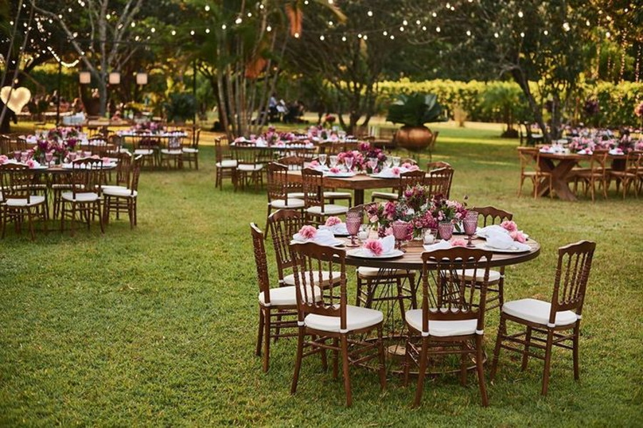
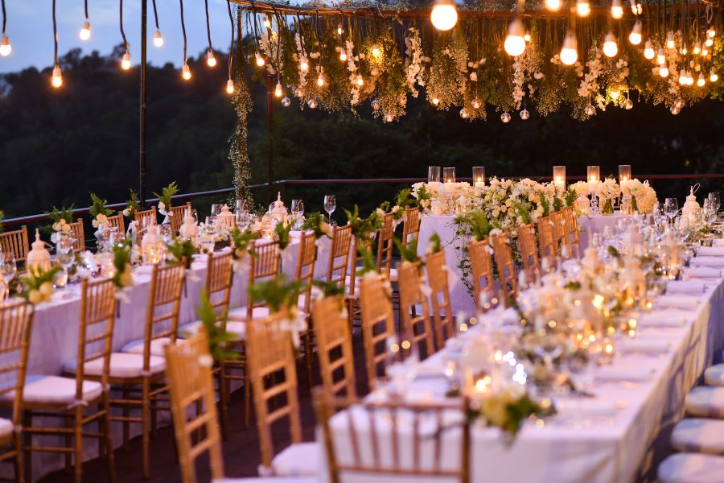
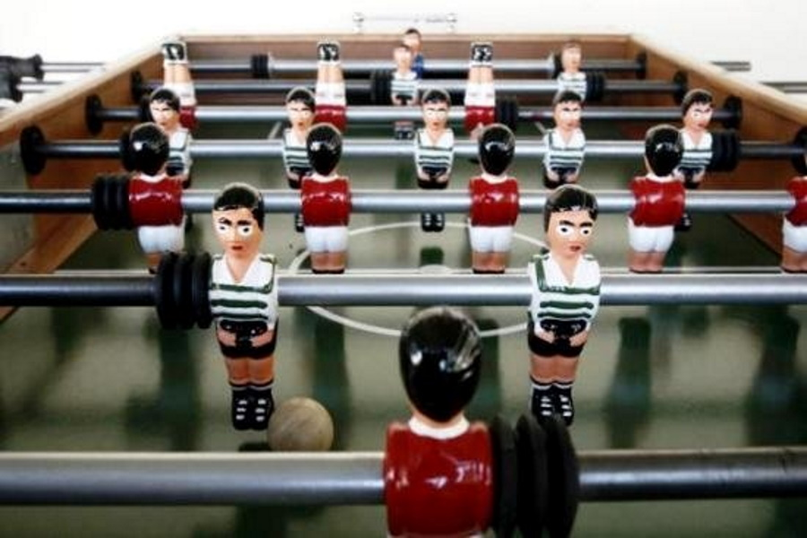
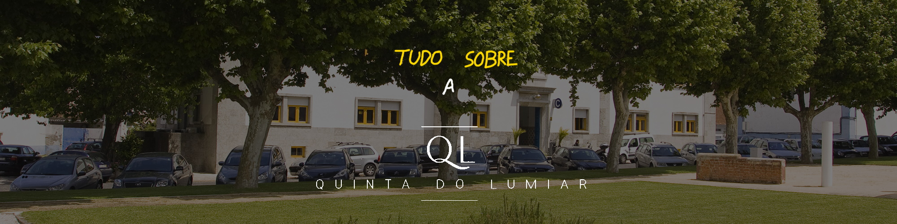

- 
- 
- 
-

-

A Quinta do Lumiar é o mais recente projeto na organização de eventos do Campus Lumiar.
Disponibilizando através deste meio os mais diversos eventos, tornando-os acessíveis aos demais alunos e interessados.

A Quinta do Lumiar conta com os mais diversos projetos no âmbito do campus lumiar, e interligação entre alunos. Nos quais:
Tudo isto e muito mais! Esperamos por ti!
Voltar à página principal
A quinta do Lumiar está localizada no campus lumiar, Alameda das Linhas de Torres 179, 1750-142 Lisboa.